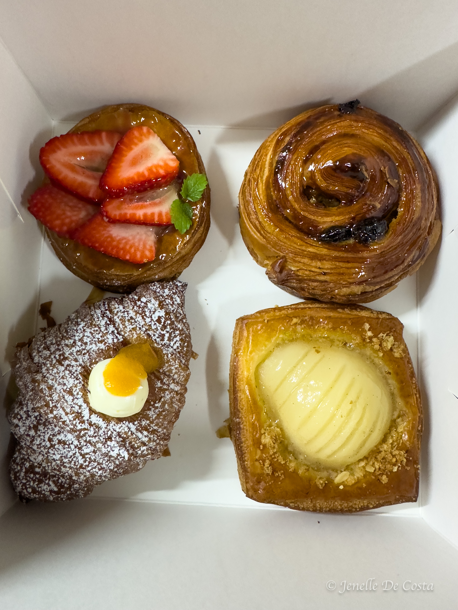
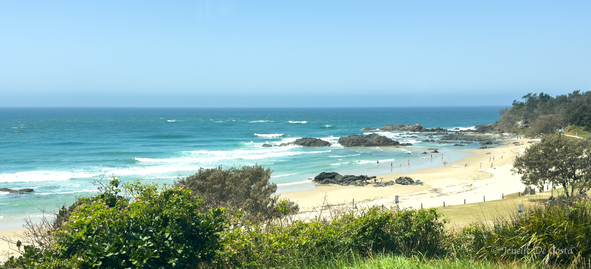
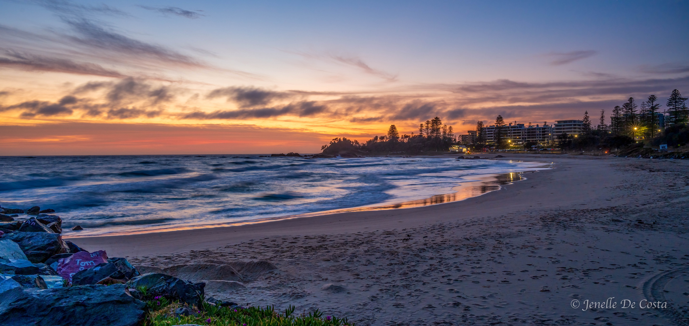
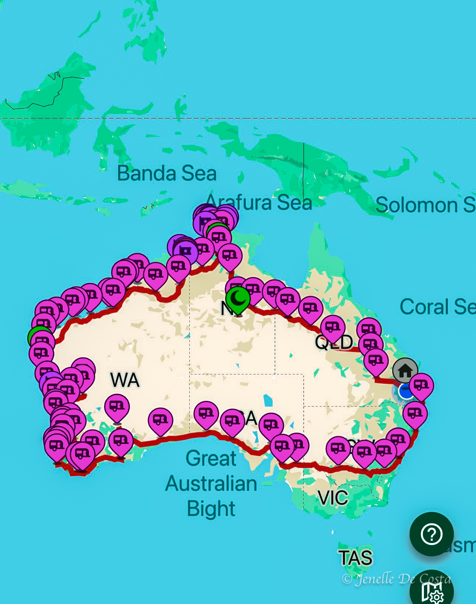
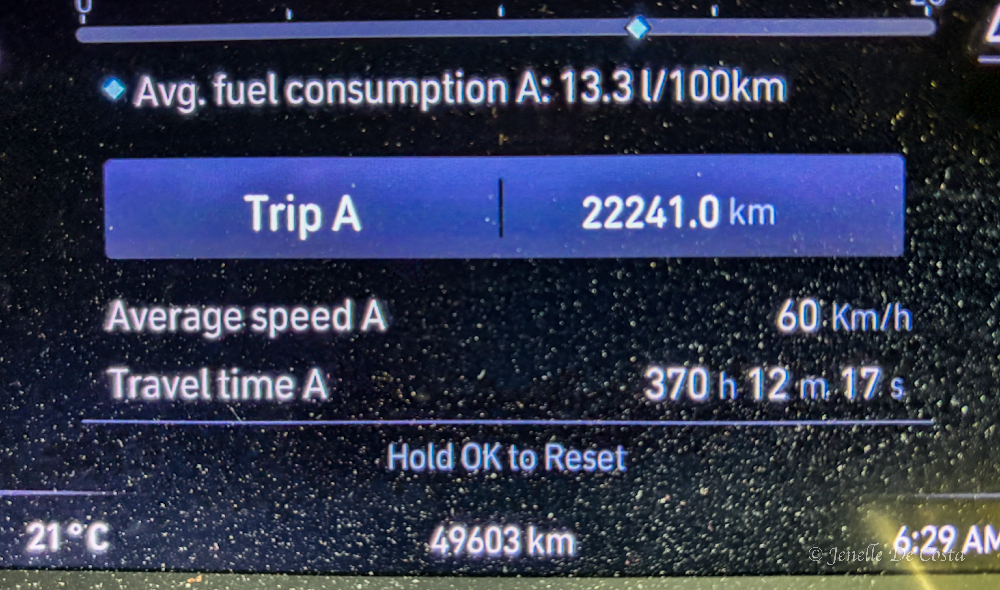

Home
We are leaving Sydney today and taking a lesiurly 3 day drive home. First stop Maggios Bakery in Coxs Rd., North Ryde then onto Port Macquarie, Ballina and Toowoomba.

First overnight stop Port Macquarie
We bought fish and chips from the "Chip Shop" and had lunch at Lions Lookout


Today we are heading north to Ballina. Unfortunally our regular cake stop at Woolgoolga Beach Bakery is closed due to a power outage. Bummer man!
Then the final day from Ballina up through the Gold Coast where we get caught in our first traffic jam of the trip. Finally into Toowoomba for an early lunch with Pearce.

Now time for the analysis..

Jenelle diligently kept the fuel details for the whole trip. John made the speadsheet